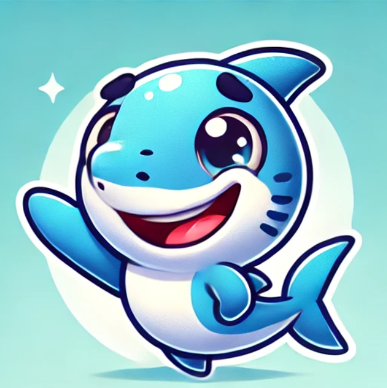

Estomac → Vagues et Brassage des Fonds Marins
Le savais-tu ?

Bon fonctionnement
Estomac : Un estomac fonctionnant correctement permet une digestion efficace et l'absorption des nutriments nécessaires pour fournir de l'énergie au corps.
Vagues : Le brassage régulier garantit un écosystème marin équilibré, soutenant la biodiversité et la circulation des nutriments.
C'est SUPER ça !

Mauvais fonctionnement
Estomac : Un mauvais fonctionnement peut entraîner des problèmes comme l'indigestion, les ballonnements ou des douleurs abdominales.
Vagues : Une perturbation, comme un manque de vagues, peut provoquer la stagnation des nutriments, entraînant un appauvrissement de la biodiversité marine.
Oh non ça fait peur